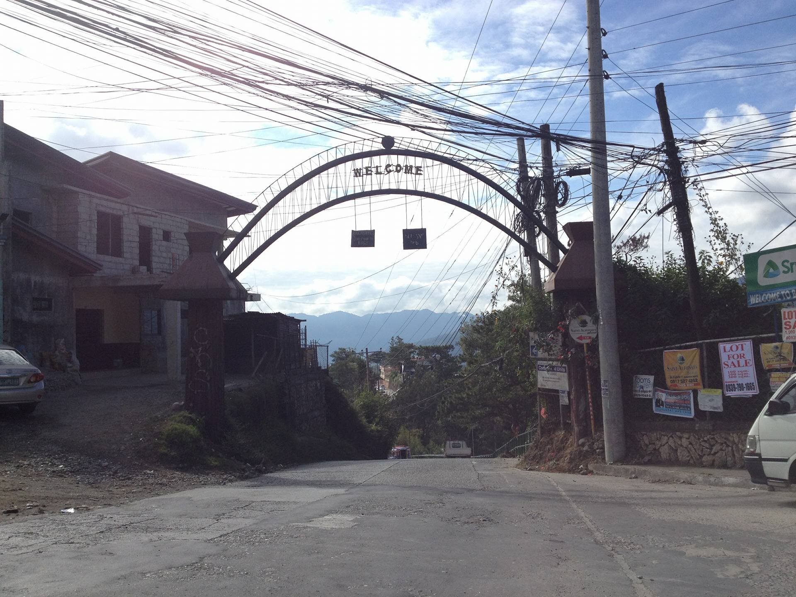
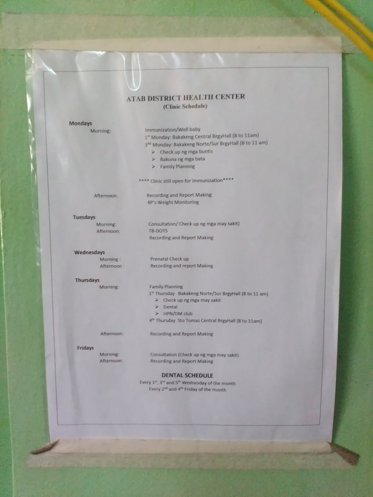

Bakakeng North: Barangay Norte Sur
Our Barangay Inclusions
Bakakeng North: Barangay Norte-sur is located at Bakakeng Sur, Rd., Baguio City, Benguet in the Philippines. Its administrative area covers wide divisions of housing and lodging residences, home subdivisions, local barangay clinics, the Holy Family Catholic Church and other local churches, and schools. It also includes automotive areas, a financial bank, other religious centres, educational institutions, small ad local shopping centers, dining areas, and local healthcare institutions. Along the main Bakakeng road is the campus area of one of the Philippines' most widely known universities, the Maryheights campus of Saint Louis University, Baguio. While the Holy Family Catholic Church also resides within main Bakakeng road area, the Santa Catalina Convent may also be spotted here, as well as the Multi-purpose Center(townhall) of the barangay.
The barangay clinic also voluntarily provides a charge-free dental service to all their barangay residents. In regards to their free services, there are also several types of other clinical/medical services that are particularly scheduled to be available as well as being charge-free on specific days of the week. This includes general or private consultations, infant immunization, pregnancy check ups, prenatal check ups, and even forums or consultations regarding family planning--where the barangay administration is especially keen on monitoring in the hopes of supporting families or individuals in need. For more information regarding the clinic's weekly schedule for consultations and other concerns, please refer to the image below.

The Barangay Norte-sur administration also conducts a yearly training session for residents in regards to the conduct of monitoring behavior. Some cases wherein this may very well be of benefit for the barangay, is when a new resident comes to live in and a neighborhood watch of at least 24 hours is on the roll, for the purpose of notifying other residents to be alert and safe while the new residency is still under watch.
Aside from this, the barangay administration has also voluntarily put up free consultations or outreach program in support for people with disabilities and single parents. Some other of their inclusions include tree planting activities annually in regards to the Republic Act regarding the national training program, whereas young residents, volunteers of ages 16 and above, and the barangay administrators collaborate during the said activity. The administration also has what is called a "bayanihan", or in other words, a general cleaning activity before any said or announced general meeting for the weekly or monthly report of conduct and well-being of the barangay area.